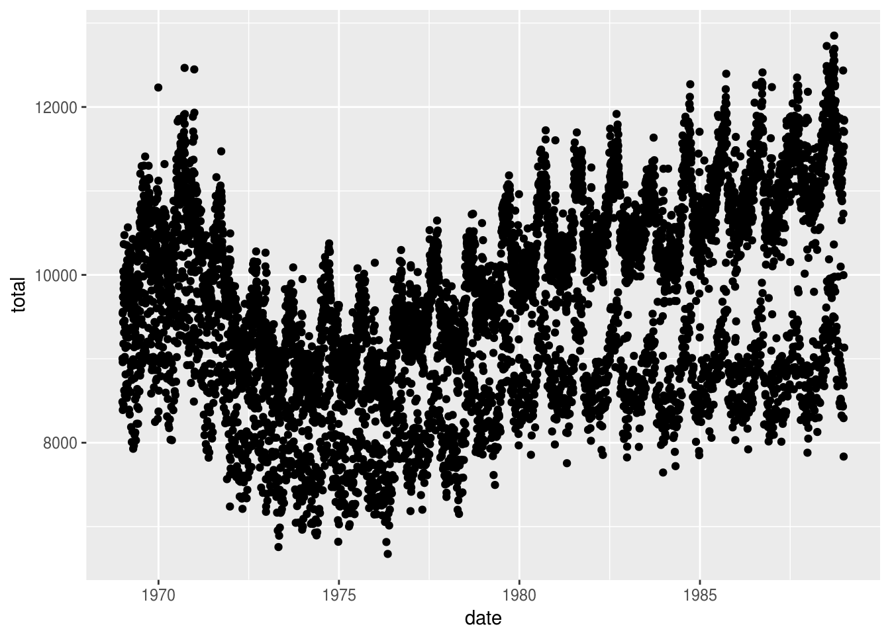
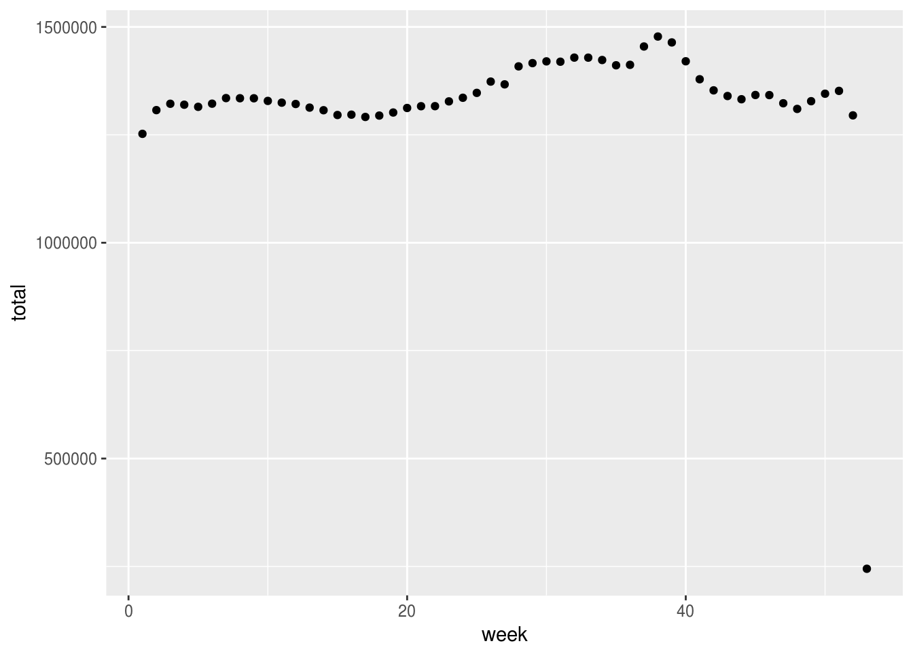
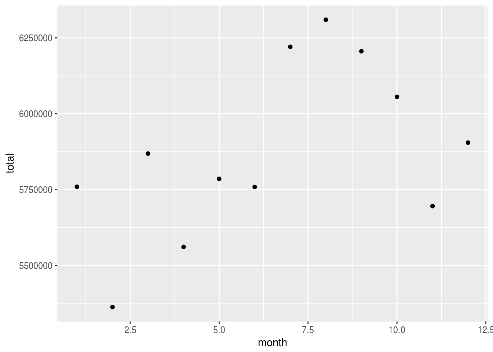
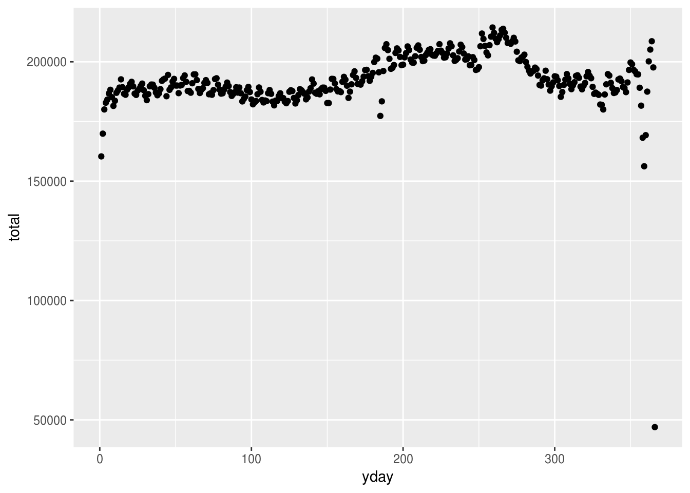
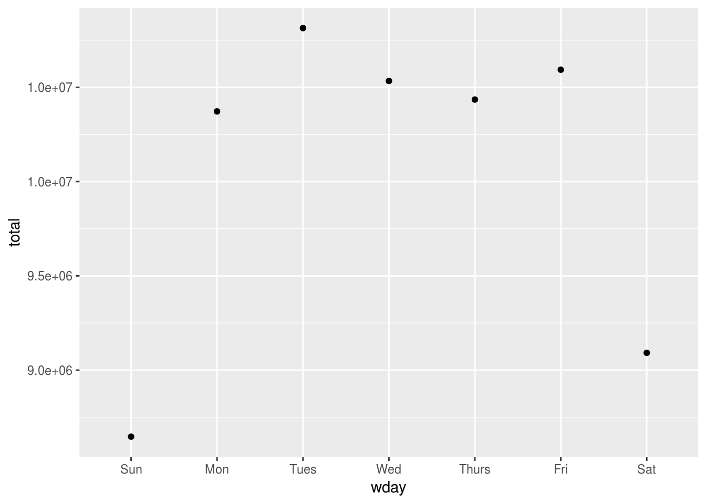
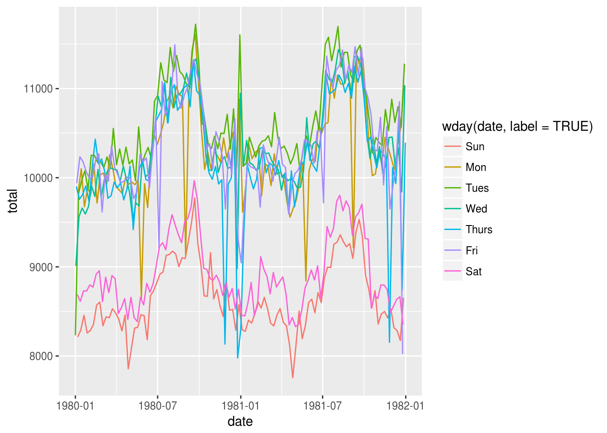
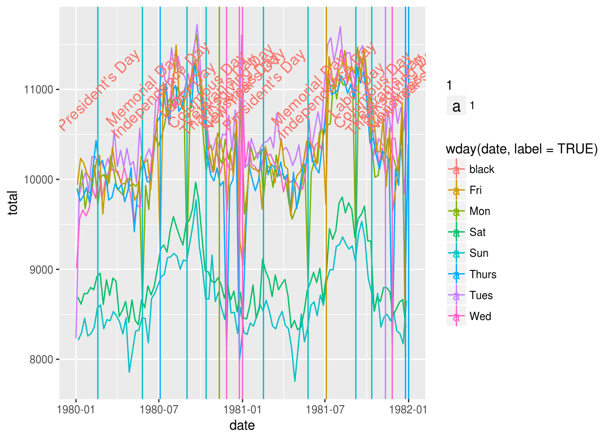

library(dplyr)
library(ggplot2)
library(lubridate)##
## Attaching package: 'lubridate'## The following object is masked from 'package:base':
##
## datedata(Birthdays, package = "mosaicData")
head(Birthdays)| state | year | month | day | date | wday | births |
|---|---|---|---|---|---|---|
| AK | 1969 | 1 | 1 | 1969-01-01 | Wed | 14 |
| AL | 1969 | 1 | 1 | 1969-01-01 | Wed | 174 |
| AR | 1969 | 1 | 1 | 1969-01-01 | Wed | 78 |
| AZ | 1969 | 1 | 1 | 1969-01-01 | Wed | 84 |
| CA | 1969 | 1 | 1 | 1969-01-01 | Wed | 824 |
| CO | 1969 | 1 | 1 | 1969-01-01 | Wed | 100 |
DailyBirths <- Birthdays %>%
group_by(date) %>%
summarise(total = sum(births))
head(DailyBirths)| date | total |
|---|---|
| 1969-01-01 | 8486 |
| 1969-01-02 | 9002 |
| 1969-01-03 | 9542 |
| 1969-01-04 | 8960 |
| 1969-01-05 | 8390 |
| 1969-01-06 | 9560 |
DailyBirths %>%
ggplot(aes(x=date, y = total)) + geom_point()
WeeklyBirths <- Birthdays %>%
mutate(week = week(date)) %>%
group_by(week) %>%
summarise(total = sum(births))
head(WeeklyBirths)| week | total |
|---|---|
| 1 | 1252303 |
| 2 | 1307253 |
| 3 | 1321998 |
| 4 | 1319819 |
| 5 | 1314877 |
| 6 | 1322192 |
WeeklyBirths %>%
ggplot(aes(x=week, y = total)) + geom_point()
MonthlyBirths <- Birthdays %>%
mutate(month = month(date)) %>%
group_by(month) %>%
summarise(total = sum(births))
head(MonthlyBirths)| month | total |
|---|---|
| 1 | 5759165 |
| 2 | 5362585 |
| 3 | 5868501 |
| 4 | 5560775 |
| 5 | 5785348 |
| 6 | 5758571 |
MonthlyBirths %>%
ggplot(aes(x=month, y = total)) + geom_point()
YDailyBirths <- Birthdays %>%
mutate(yday = yday(date)) %>%
group_by(yday) %>%
summarise(total = sum(births))
head(YDailyBirths)| yday | total |
|---|---|
| 1 | 160369 |
| 2 | 169896 |
| 3 | 180036 |
| 4 | 182854 |
| 5 | 184145 |
| 6 | 186726 |
YDailyBirths %>%
ggplot(aes(x=yday, y = total)) + geom_point()
WDailyBirths <- Birthdays %>%
mutate(wday = wday(date, label = TRUE)) %>%
group_by(wday) %>%
summarise(total = sum(births))
head(WDailyBirths)| wday | total |
|---|---|
| Sun | 8.6e+06 |
| Mon | 1.0e+07 |
| Tues | 1.1e+07 |
| Wed | 1.1e+07 |
| Thurs | 1.0e+07 |
| Fri | 1.1e+07 |
WDailyBirths %>%
ggplot(aes(x=wday, y = total)) + geom_point()
MyTwoYears <- DailyBirths %>%
filter(year(date) == 1980 | year(date) == 1981)
head(MyTwoYears)| date | total |
|---|---|
| 1980-01-01 | 8232 |
| 1980-01-02 | 9011 |
| 1980-01-03 | 9902 |
| 1980-01-04 | 9939 |
| 1980-01-05 | 8691 |
| 1980-01-06 | 8213 |
MyTwoYears %>%
ggplot(aes(x=date, y = total, color=wday(date, label = TRUE))) + geom_line()
Holidays <- read.csv("http://tiny.cc/dcf/US-Holidays.csv", stringsAsFactors = FALSE) %>%
mutate(date = as.POSIXct(dmy(date))) %>%
filter(year(date) == 1980 | year(date) == 1981)
View(Holidays)
MyTwoYears %>%
ggplot(aes(x=date, y = total, color=wday(date, label = TRUE))) + geom_line() + geom_vline(data = Holidays, aes(xintercept = as.numeric(date), color = wday(date, label = TRUE))) + geom_text(data = Holidays, aes(x = date, y = 11000, label = holiday, angle = 45, size = 1, color = "black"))